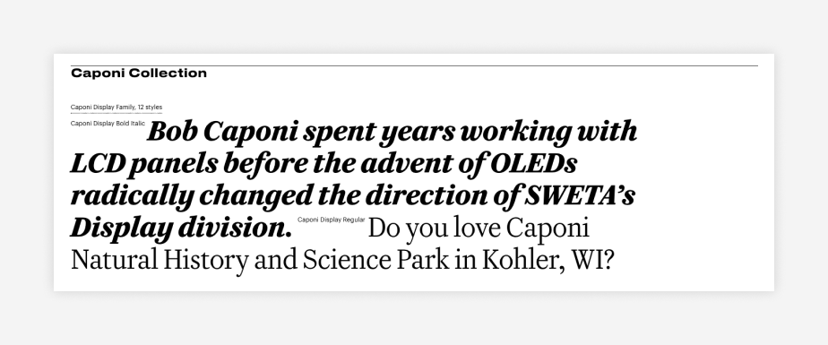
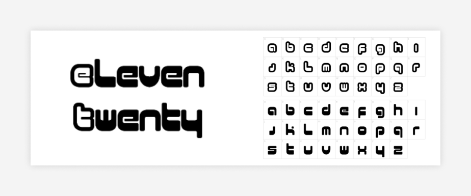

Serif Fonts
Forum
This serif font works especially well for titles and headlines, making it a good choice for your website’s primary font. Its Roman proportions give it a vintage feel.
Palatino
Palatino is an old-school serif font that is versatile and easy on the eyes. This typeface has structured, professional undertones and makes a strong, powerful statement.
Publico
This serif font has an old-school newspaper look that still works well for modern design. With several text families to choose from, the font is sharp and expressive with contrast between thick and thinner lines.
Magnific Caos
This classic gothic serif font includes decorative ligatures on capital letters. It’s dark and bold, with hints of white in each letter to slightly brighten up the forefront and add depth.

Diastema
Diastema has a modern, whimsical design that uses long and sometimes joining ligatures. It has a fancy, classy feel that pairs well with clean, modern imagery.
Caponi
Caponi is a versatile serif font with three families offering slightly different, yet complementary, presentations: Caponi Display has a modern look ideal for titles and headers; Caponi Slab is bolder and perfect for large text and quotes meant to stand out; and Caponi Text is a mellow interpretation that can be used for any text.
Caudex
Caudex was originally designed for print in the late 90s, but it has since been adapted for the web. It puts a trendy and contemporary spin on letterforms seen in medieval manuscripts.
FS Ostro
This serif font provides grace and elegance. It’s mellow, charismatic design is easy to read and incredibly versatile.
Ratio Modern
This serif font uses a combination of thin and thick lines to make up each letter, adding elegant undertones to an otherwise classic design.
Sans Serif Fonts
CoFo Sans
This sans serif font appears sleek and modern with Cyrillic undertones. It’s simple and easy-to-read.
Lato
A sans serif font equally suited for both titles and body text, its rounded, classic proportions create a sense of harmony and warmth.
Abolition
Abolition offers a strong, easy-to-read sans serif font. Composed of only capital letters, this attention-grabbing font makes a bold statement.
Sofia Pro
One of MyFonts’ best-selling fonts, Sofia Pro is a sans serif typeface with a modern look and geometric lines. Designed specifically to be readable even in very small sizes, it’s perfect for web accessibility, usability, business cards and mobile screens.
Graphik
With over 18 styles to choose from, Graphik boasts clean, elegant lines and a variety of letter widths. It suits not only for web design, but also marketing assets such as newsletters, logos and advertisements.
BD Supper
Offering whimsical vibes, BD Supper has a modern, cartoonish and childlike feel, while still appearing clean and bold.
Barlow
The Barlow sans serif font is clean and low-contrast, making it effortlessly readable. The typeface designer looked to California license plates and highway signs for inspiration.
FS Me
This sans serif font was specifically designed to enhance readability for people with learning disabilities. Larger dots on the “i”s, extended ascenders and longer tails are just a few of the unique characteristics that make this font ideal for enhancing web accessibility.
Eleven Twenty
With a futuristic vibe evoking old-school video games, this font fits sites related to science fiction or other forward-thinking ideas.
Lil Grotesk
Don’t let the name fool you—this sans serif font has a clean, block-like style with rounded edges outlining the letters. Indeed, Lil Grotesk has a pristine look that’s very easy to read.
Poppins
Poppins is a sans serif type family whose clean, minimalist aesthetic is based on geometric forms and perfect circles.
Helvetica
a sans-serif font known for its clean and simple design.
Arial
another popular sans-serif font that is similar to Helvetica. It's a bit more informal while still being versatile and professional.
Tahoma
a sans-serif font that is similar to Arial, but it's a bit wider and has more space between the letters. This makes it a good choice for websites that want to make their text easy to read.
Roboto
a sans-serif font that's designed to be used on screens. It's a modern and versatile font that is well-suited for websites.